Panes
What is the difference between facet_wrap() and facet_grid()?
The simplest answer is that you should use facet_wrap() when faceting by a single variable and facet_grid() when faceting by two variables and want to create a grid of panes.
See example
facet_wrap() is most commonly used to facet by a plot by a single categorical variable.
ggplot(mpg, aes(x = cty)) +
geom_histogram() +
facet_wrap(~ drv)
#> `stat_bin()` using `bins = 30`. Pick better value with `binwidth`.
And facet_grid() is commonly used to facet by a plot by two categorical variables.
ggplot(mpg, aes(x = cty)) +
geom_histogram() +
facet_grid(cyl ~ drv)
#> `stat_bin()` using `bins = 30`. Pick better value with `binwidth`.
Notice that this results in some empty panes (e.g. 4-wheel drive and 5 cylinders) as there are no cars in the mpg dataset that fall into such categories.
You can also use facet_wrap() with to facet by two categorical variables. This will only create facets for combinations of the levels of variables for which data exists.
ggplot(mpg, aes(x = cty)) +
geom_histogram() +
facet_wrap(cyl ~ drv)
#> `stat_bin()` using `bins = 30`. Pick better value with `binwidth`.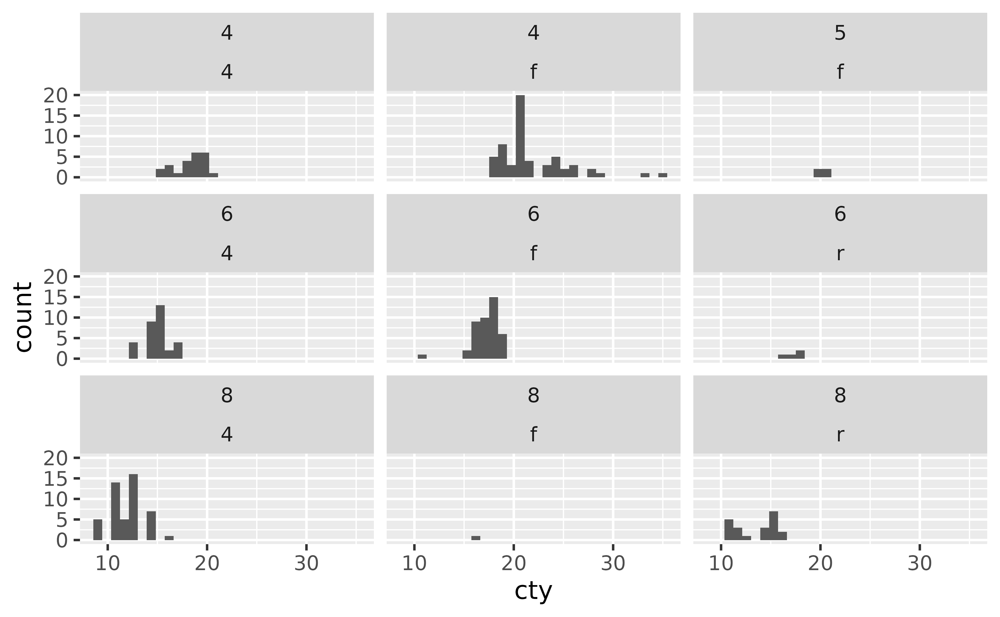
In facet_wrap() you can control the number of rows and/or columns of the resulting plot layout using the nrow and ncol arguments, respectively. In facet_grid() these values are determined by the number of levels of the variables you’re faceting by.
Similarly, you can also use facet_grid() to facet by a single categorical variable as well. In the formula notation, you use a . to indicate that no faceting should be done along that axis, i.e. cyl ~ . facets across the y-axis (within a column) while . ~ cyl facets across the x-axis (within a row).
ggplot(mpg, aes(x = cty)) +
geom_histogram() +
facet_grid(cyl ~ .)
#> `stat_bin()` using `bins = 30`. Pick better value with `binwidth`.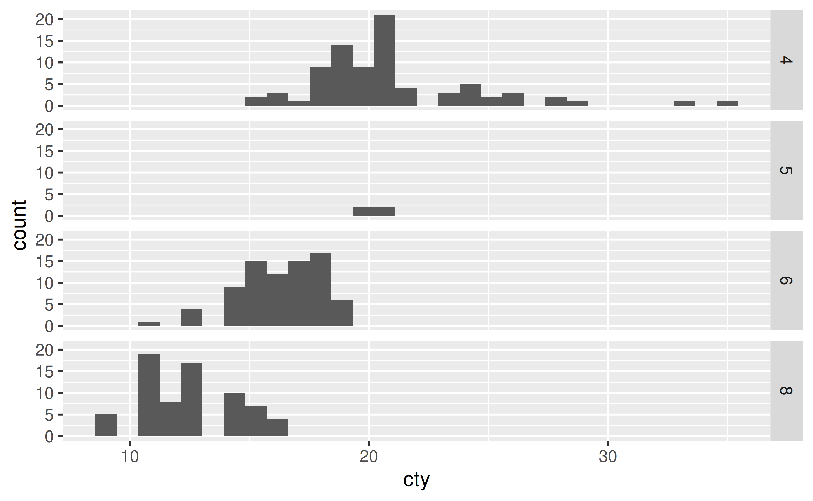
ggplot(mpg, aes(x = cty)) +
geom_histogram() +
facet_grid(. ~ cyl)
#> `stat_bin()` using `bins = 30`. Pick better value with `binwidth`.
How can I place a vertical lines (geom_vline()) in each pane of a faceted plot?
First, calculate where the lines should be placed and save this information in a separate data frame. Then, add a geom_vline() layer to your plot that uses the summarized data.
See example
Suppose you have the following plot, and you want to add a vertical line at the mean value of hwy (highway mileage) for each pane.
ggplot(mpg, aes(x = hwy)) +
geom_histogram(binwidth = 5) +
facet_wrap(~ drv)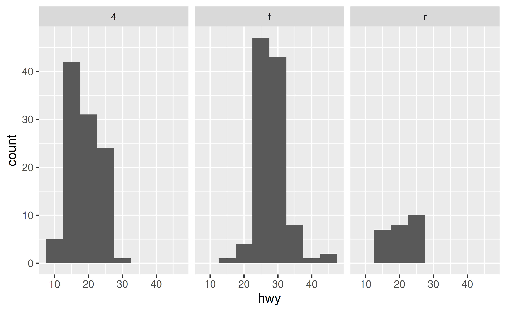
First, calculate these means and save them in a new data frame.
library(dplyr)
#>
#> Attaching package: 'dplyr'
#> The following objects are masked from 'package:stats':
#>
#> filter, lag
#> The following objects are masked from 'package:base':
#>
#> intersect, setdiff, setequal, union
mpg_summary <- mpg %>%
group_by(drv) %>%
summarise(hwy_mean = mean(hwy))
mpg_summary
#> # A tibble: 3 × 2
#> drv hwy_mean
#> <chr> <dbl>
#> 1 4 19.2
#> 2 f 28.2
#> 3 r 21Then, add a geom_vline() layer to your plot that uses the summary data.
ggplot(mpg, aes(x = hwy)) +
geom_histogram(binwidth = 5) +
facet_wrap(~ drv) +
geom_vline(data = mpg_summary, aes(xintercept = hwy_mean))
Axes
How can I set individual axis limits for facets?
Either let ggplot2 determine custom axis limits for the facets based on the range of the data you’re plotting using the scales argument in facet_wrap() or facet_grid() or, if that is not sufficient, use expand_limits() to ensure limits include a single value or a range of values.
See example
Suppose you have the following faceted plot. By default, both x and y scales are shared across the facets.
ggplot(mpg, aes(x = cty, y = hwy)) +
geom_point() +
facet_grid(cyl ~ drv)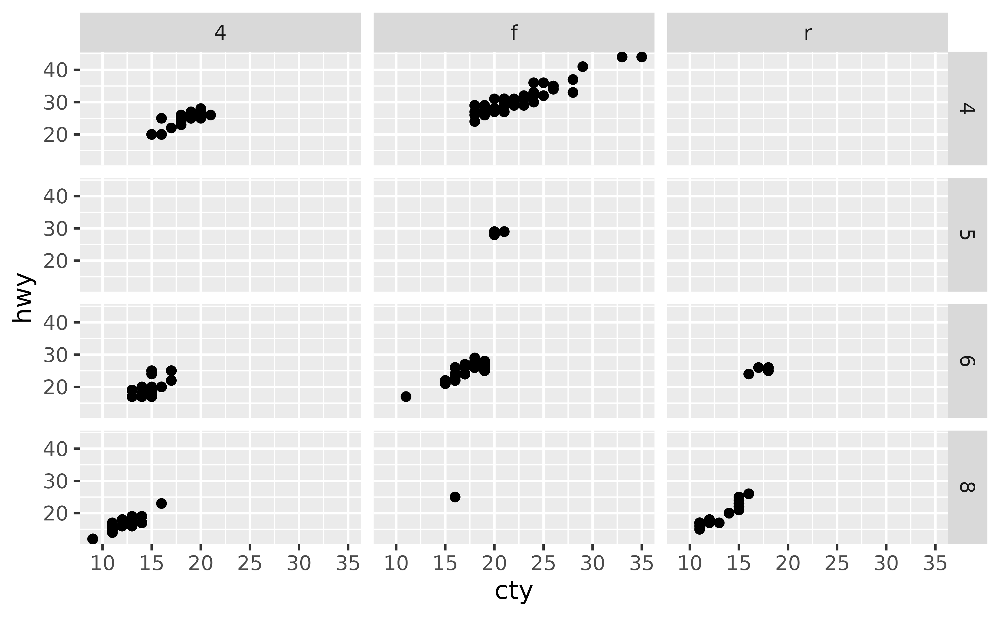
You can control this behaviour with the scales argument of faceting functions: varying scales across rows ("free_x"), columns ("free_y"), or both rows and columns ("free"), e.g.
ggplot(mpg, aes(x = cty, y = hwy)) +
geom_point() +
facet_grid(cyl ~ drv, scales = "free") 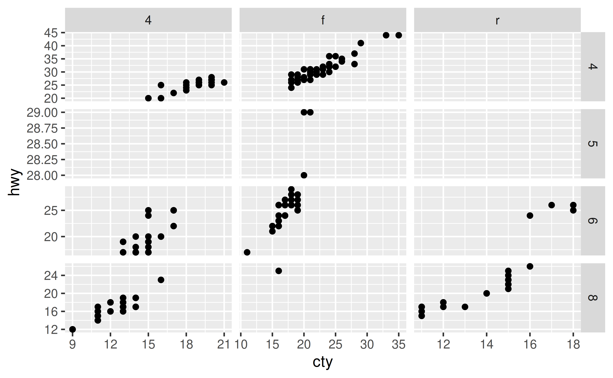
If you also want to make sure that a particular value or range is included in each of the facets, you can set this with expand_limits(), e.g. ensure that 10 is included in the x-axis and values between 20 to 25 are included in the y-axis:
ggplot(mpg, aes(x = cty, y = hwy)) +
geom_point() +
facet_grid(cyl ~ drv, scales = "free") +
expand_limits(x = 10, y = c(20, 25))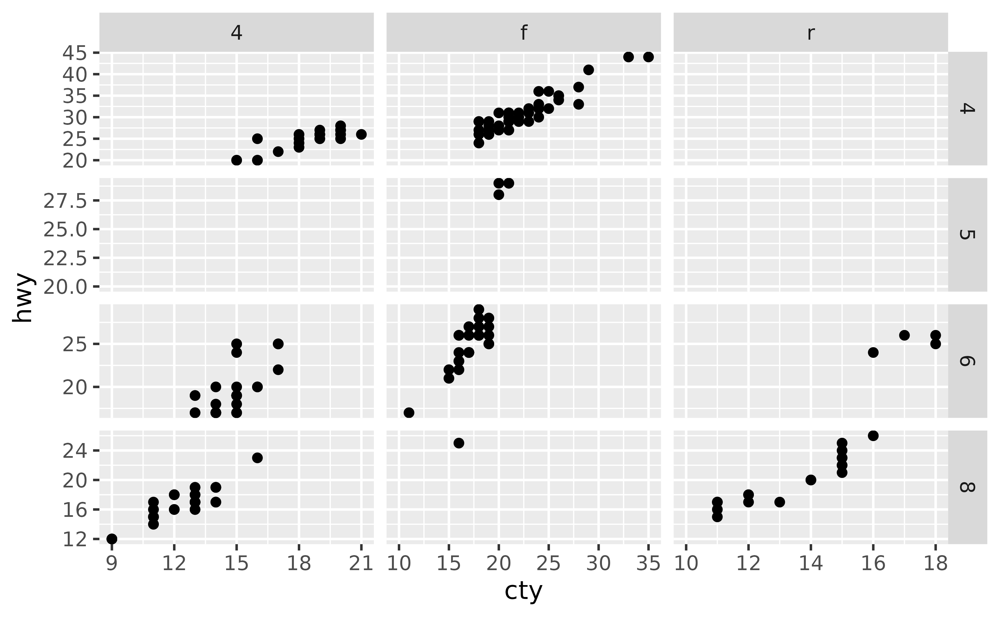
Facet labels
How can I remove the facet labels entirely?
Set the strip.text element in theme() to element_blank().
See example
Setting strip.text to element_blank() will remove all facet labels.
ggplot(mpg, aes(x = cty, y = hwy)) +
geom_point() +
facet_grid(cyl ~ drv) +
theme(strip.text = element_blank())
You can also remove the labels across rows only with strip.x.text or across columns only with strip.y.text.
ggplot(mpg, aes(x = cty, y = hwy)) +
geom_point() +
facet_grid(cyl ~ drv) +
theme(strip.text.x = element_blank())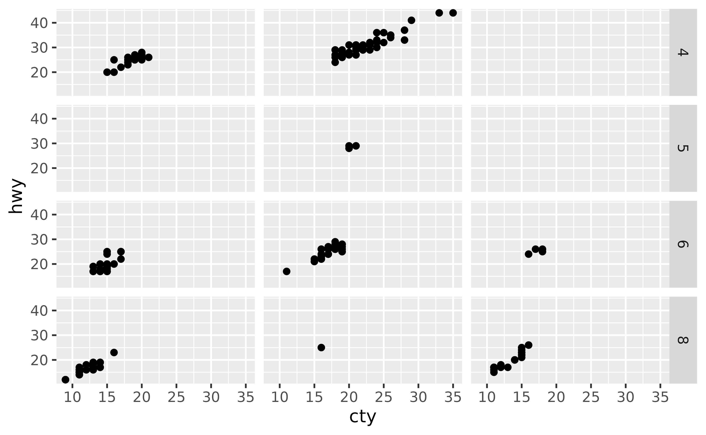
The facet labels in my plot are too long so they get cut off. How can I wrap facet label text so that long labels are spread across two rows?
Use label_wrap_gen() in the labeller argument of your faceting function and set a width (number of characters) for the maximum number of characters before wrapping the strip.
See example
In the data frame below we have 100 observations, 50 of them come from one group and 50 from another. These groups have very long names, and so when you facet the ploy by group, the facet labels (strips) get cut off.
df <- data.frame(
x = rnorm(100),
group = c(rep("A long group name for the first group", 50),
rep("A muuuuuuuuuuuuuch longer group name for the second group", 50))
)
ggplot(df, aes(x = x)) +
geom_histogram(binwidth = 0.5) +
facet_wrap(~ group)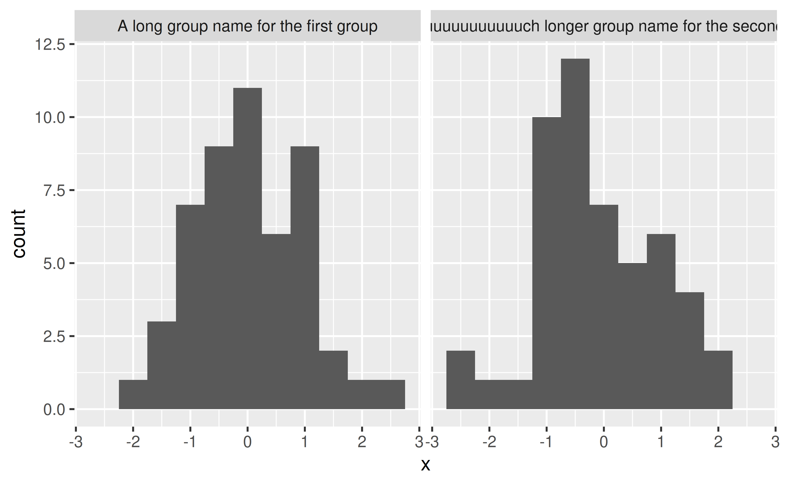
You can control the maximum width of the facet label by setting the width in the label_wrap_gen() function, which is then passed to the labeller argument of your faceting function.
ggplot(df, aes(x = x)) +
geom_histogram(binwidth = 0.5) +
facet_wrap(~ group, labeller = labeller(group = label_wrap_gen(width = 25)))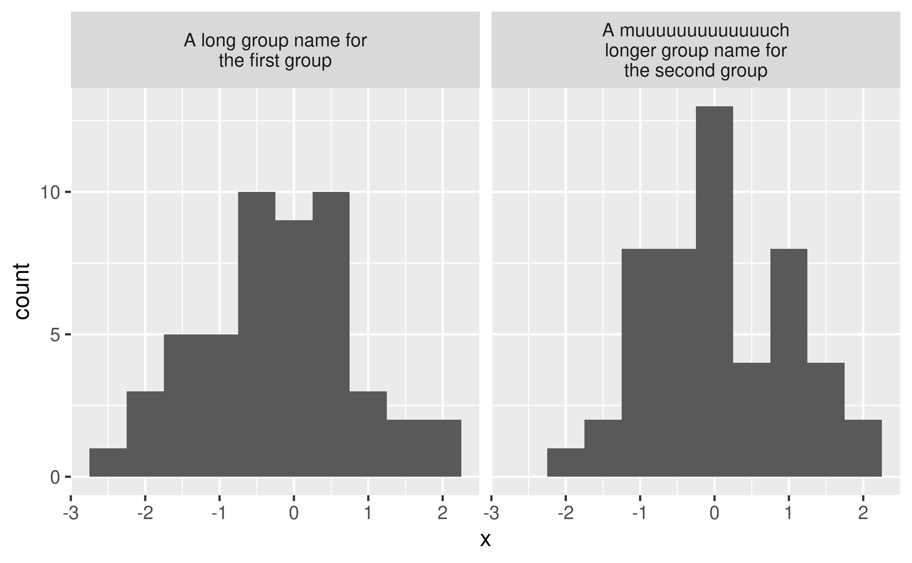
How can I set different axis labels for facets?
Use as_labeller() in the labeller argument of your faceting function and then set strip.background and strip.placement elements in the theme() to place the facet labels where axis labels would go. This is a particularly useful solution for plotting data on different scales without the use of double y-axes.
See example
Suppose you have data price data on a given item over a few years from two countries with very different currency scales.
df <- data.frame(
year = rep(2016:2021, 2),
price = c(10, 10, 13, 12, 14, 15, 1000, 1010, 1200, 1050, 1105, 1300),
country = c(rep("US", 6), rep("Japan", 6))
)
df
#> year price country
#> 1 2016 10 US
#> 2 2017 10 US
#> 3 2018 13 US
#> 4 2019 12 US
#> 5 2020 14 US
#> 6 2021 15 US
#> 7 2016 1000 Japan
#> 8 2017 1010 Japan
#> 9 2018 1200 Japan
#> 10 2019 1050 Japan
#> 11 2020 1105 Japan
#> 12 2021 1300 JapanYou can plot price versus time and facet by country, but the resulting plot can be a bit difficult to read due to the shared y-axis label.
ggplot(df, aes(x = year, y = price)) +
geom_smooth() +
facet_wrap(~ country, ncol = 1, scales = "free_y") +
scale_x_continuous(breaks = 2011:2020)
#> `geom_smooth()` using method = 'loess' and formula = 'y ~ x'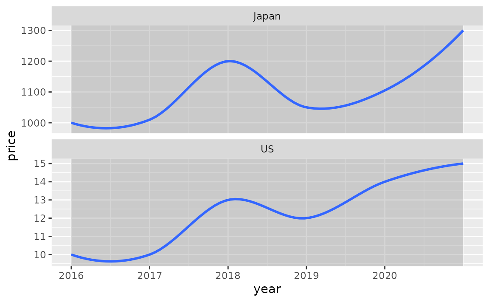
With the following you can customize the facet labels first with as_labeller(), turn off the default y-axis label, and then place the facet labels where the y-axis label goes ("outside" and on the "left").
ggplot(df, aes(x = year, y = price)) +
geom_smooth() +
facet_wrap(~ country, ncol = 1, scales = "free_y",
labeller = as_labeller(
c(US = "US Dollars (USD)", Japan = "Japanese Yens (JPY)")),
strip.position = "left"
) +
scale_x_continuous(breaks = 2011:2020) +
labs(y = NULL) +
theme(strip.background = element_blank(), strip.placement = "outside")
#> `geom_smooth()` using method = 'loess' and formula = 'y ~ x'
#> Warning in simpleLoess(y, x, w, span, degree = degree, parametric =
#> parametric, : Chernobyl! trL>n 6
#> Warning in simpleLoess(y, x, w, span, degree = degree, parametric =
#> parametric, : Chernobyl! trL>n 6
#> Warning in sqrt(sum.squares/one.delta): NaNs produced
#> Warning in stats::qt(level/2 + 0.5, pred$df): NaNs produced
#> Warning in simpleLoess(y, x, w, span, degree = degree, parametric =
#> parametric, : Chernobyl! trL>n 6
#> Warning in simpleLoess(y, x, w, span, degree = degree, parametric =
#> parametric, : Chernobyl! trL>n 6
#> Warning in sqrt(sum.squares/one.delta): NaNs produced
#> Warning in stats::qt(level/2 + 0.5, pred$df): NaNs produced
#> Warning in max(ids, na.rm = TRUE): no non-missing arguments to max;
#> returning -Inf
#> Warning in max(ids, na.rm = TRUE): no non-missing arguments to max;
#> returning -Inf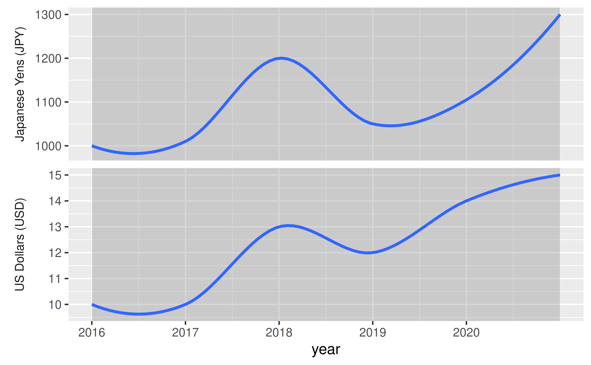